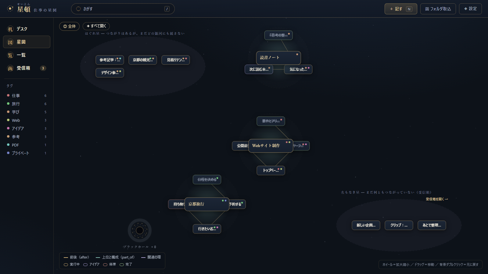
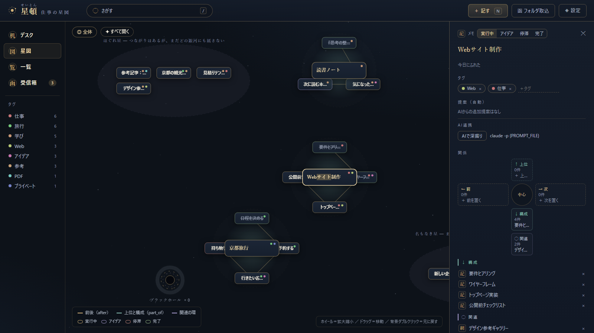
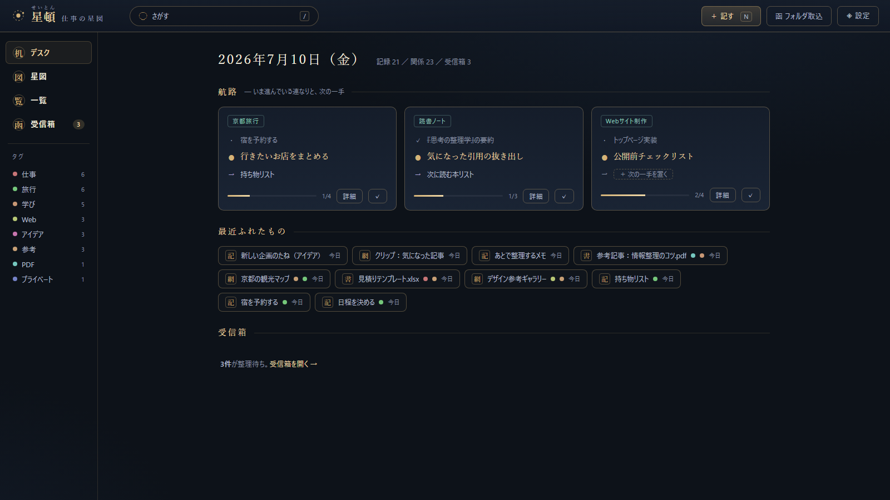

一
ベタ置きでいい
置き場所を決める前に、いまの断片を逃さず受信箱へ。整理はあとで、AIと一緒に。
Motion
放り込む・編む・辿る。星頓の基本の流れを短いデモで。
Why Seiton?
星頓はノート帳でもタスク管理でもなく、散らかった仕事の関係地図です。
置き場所を決める前に、いまの断片を逃さず受信箱へ。整理はあとで、AIと一緒に。
after、part_of、related。意味を持つ方向で、フォルダ階層より速く文脈へ戻れます。
AI連携は任意CLIか手動コピペ。テレメトリも隠れたクラウド同期もありません。
Three Scales
全体を見て、中心へ寄り、最後はひとつの星に触れる。
タグのまとまりと大きな流れを俯瞰します。散らばった作業がどの領域に集まっているかが見えます。

ひとつの項目を中心に、前後・上下・周囲の関係を意味のある方向で読みます。

デスクで今日の航路、最近の作業、受信箱を確認し、次の一手へ戻ります。

Privacy
黒い箱ではなく、あなたの机の上で動く道具です。読んでよい場所はあなたが決めます。
完全ローカル
127.0.0.1 のローカルサーバーと SQLite。クラウド同期はありません。
許可した場所しか読まない
設定した許可ルートだけを読みます。名前だけ/内容も解析をルートごとに選べます。
テレメトリなし
使用状況を送信しません。AIはあなたが設定したCLIか手動コピペだけです。
Download
成果物はGitHub Releasesで配布しています。Windows版、ソース版、クローンの3通りから選べます。
展開して起動するだけ。Pythonは要りません。seiton.exe か、タスクトレイに常駐させるなら seiton-tray.exe を。
seiton-v1.1.0-win64.zip
Python 3.9以上だけで動きます。pip installもNode.jsもDockerも要りません。
seiton-v1.1.0-portable.zip
開発者向け。依存ゼロなので、cloneしてseiton.cmdを押すだけです。
git clone https://github.com/D-studyLab/seiton.git
v1.1.0 は上記のzip 2種のみの配布で、インストーラーは次のリリースを予定しています。未署名のWindowsビルドではSmartScreen警告が出る場合があります。公式Releasesから取得したものだけを実行し、信頼できる場合は「詳細情報」→「実行」を選んでください。